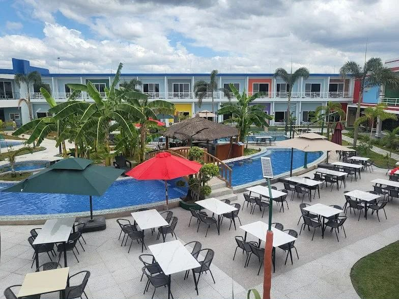
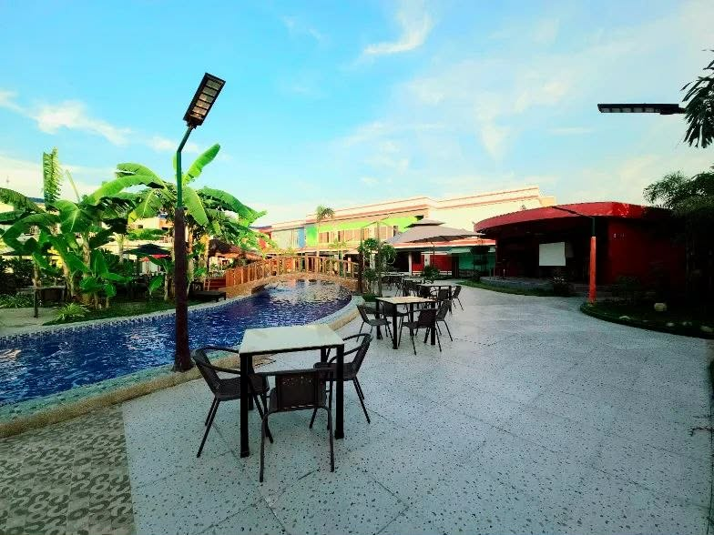
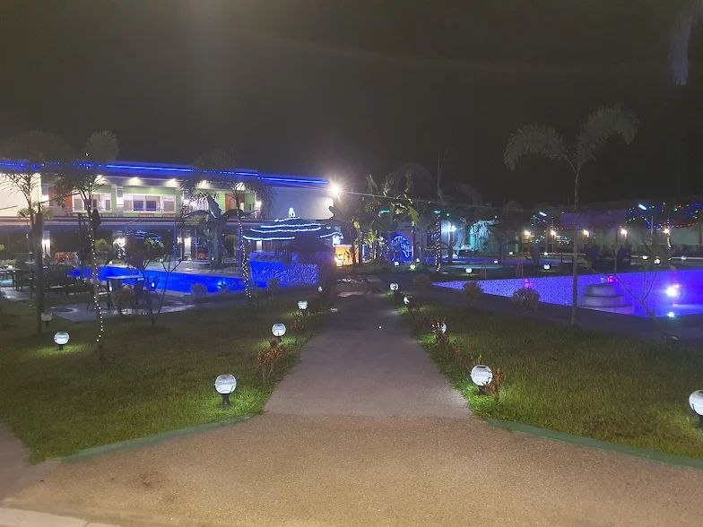
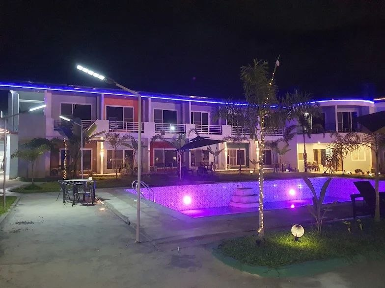

Blue Hotel & Resort is a 75-room property located in Manibaug Libutad, Porac, Pampanga. It is situated roughly a 10-minute drive from both the Clark Freeport Zone and the SandBox Activity Center, offering convenient access to local business, dining, and recreation hubs.
The resort features accommodations suitable for both short staycations and longer travels, serving as a practical base for visitors exploring the Clark and Pampanga areas.


